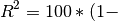

xvalidation¶
Cross-validation analysis of population receptive field models
coeff_of_determination¶
-
popeye.xvalidation.coeff_of_determination(data, model, axis=-1)¶ Calculate the coefficient of determination for a model prediction, relative to data.
- data : ndarray
- The data
- model : ndarray
- The predictions of a model for this data. Same shape as the data.
- axis: int, optional
- The axis along which different samples are laid out (default: -1).
- COD : ndarray
- The coefficient of determination. This has shape data.shape[:-1]
See: http://en.wikipedia.org/wiki/Coefficient_of_determination
The coefficient of determination is calculated as:

rac{SSE}{SSD})
where SSE is the sum of the squared error between the model and the data (sum of the squared residuals) and SSD is the sum of the squares of the deviations of the data from the mean of the data (variance * N).
deepcopy¶
-
popeye.xvalidation.deepcopy(x, memo=None, _nil=[])¶ Deep copy operation on arbitrary Python objects.
See the module’s __doc__ string for more info.
kfold_xval¶
-
popeye.xvalidation.kfold_xval(models, data, Fit, folds, fit_args, fit_kwargs)¶ Perform k-fold cross-validation to generate out-of-sample predictions for each measurement.
- models : list of instances of Model
- A list containing the Model instances to be handed to Fit. If the length of models is 1, then it is assumed that data is composed of either a single run of data or of multiple runs with the same, repeated stimulus presented.
- data : ndarray
- An m x n array representing a single voxel time-series, where m is the number of time-points and n is the number of runs
- Fit : Fit class object instance
- The Fit class that will be instantiated with the left-in and left-out datasets.
- folds : int
- The number of divisions to apply to the data
- fit_args :
- Additional arguments to the model initialization
- fit_kwargs :
- Additional key-word arguments to the model initialization
This function assumes that a prediction API is implemented in the Fit class from which a prediction is conducted. That is, the Fit object that gets generated upon fitting the model needs to have a prediction method, which receives a functional time-series and a Model class instance as input and produces a predicted signal as output.
[1] Rokem, A., Chan, K.L. Yeatman, J.D., Pestilli, F., Mezer, A., Wandell, B.A., 2014. Evaluating the accuracy of diffusion models at multiple b-values with cross-validation. ISMRM 2014.
parallel_xval¶
-
popeye.xvalidation.parallel_xval(args)¶ This is a convenience function for parallelizing the fitting procedure. Each call is handed a tuple or list containing all the necessary inputs for instantiaing a GaussianFit class object and estimating the model parameters.
- args : list/tuple
- A list or tuple containing all the necessary inputs for fitting the kfold_xval method.
fits : PopulationFit class objects that have been cross-validated.